こんな画像を
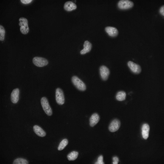
二値化すると
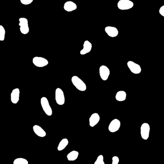
こんな感じになり、数を数えるのは簡単そうに思えるが、コンピューターには二値のデータの集まりにしか見えない。
画像処理において「繋がっている画素のグループ（連結成分）を見つけ、それぞれに固有の番号（ラベル）を割り当てるタスク」を連結成分ラベリング (CCL: Connected Componet Labeling) という。
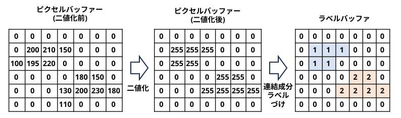
「繋がっている」＝「近傍のピクセルとピクセル値が同じ (または差分が閾値以内)である」
ピクセルの近傍としては、4 近傍と 8 近傍があるので、どちらかを選択する。
(オレンジ色のピクセルに対して、水色のピクセルを近傍ピクセルとする)
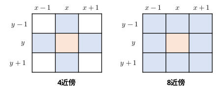
連結成分ラベリングの手法としては以下のような系譜がある。
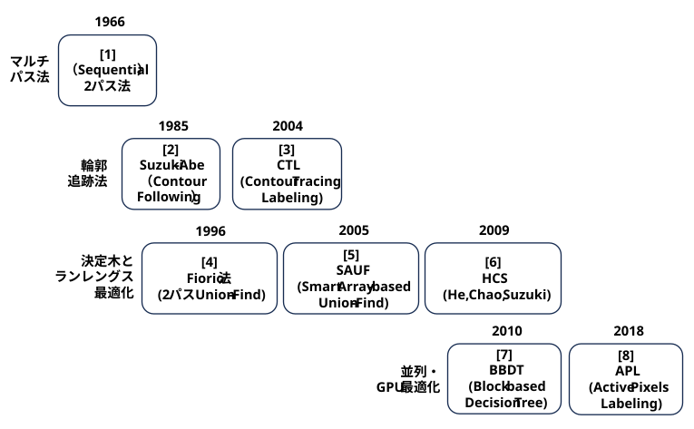
ピクセルの同値処理（Union-Findなど）を嫌い、オブジェクトの境界線を直接トレースすることで、1回の走査（あるいは最小限のアクセス）でラベリングと特徴抽出を同時に行う系統
「隣接ピクセルの状態によって次に調べるべきピクセルは一意に決まる」という性質から不要なメモリアクセスを減らす決定木アプローチや、ピクセル単位ではなく連続する画素の塊（ラン）単位で処理する手法。
連結成分ラベリングのサーベイ論文
『The connected-component labeling problem: A review of state-of-the-art algorithms』(2017)
(準備)
・検出する連結成分の最大数を決め、同値テーブルを作成する。
(同値テーブルとは何か？は、おいおいわかってくる)
・ラベル 1 ～ 最大ラベル番号を、ラベル番号と同じ値で同値テーブルを初期化する。
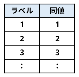
(1パス目)
・画面を左上から右下に処理を進めるとする (上→下, 左→右)。
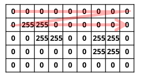
・ピンクのピクセルを処理する時点では水色の①②③④のピクセルは処理済である。
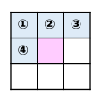
・ピンクのピクセルの値が 0 の場合
→ ラベルバッファの対応する位置に 0 を書く。
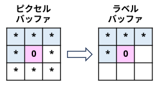
・ピンクのピクセルの値が 255 で
①②③④のラベルバッファの値がすべて 0 の場合
→ 同値テーブルから仮ラベルを取得し、ラベルバッファに書く。
(同値テーブルのポインタを 1 つ進める)
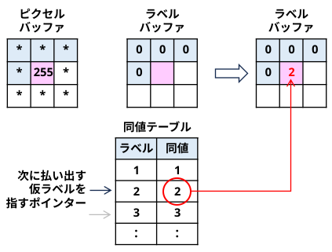
・ピンクのピクセルの値が 255 で
①②③④のラベル値に 0 ではない値がある場合
→ ①②③④のラベル値で 0 以外の一番小さいラベル値をピンクのピクセルに対応するラベルバッファに書く。
①②③④のラベル値で最小ではないラベル値に対応する同値テーブルを一番小さいラベル値に更新する。
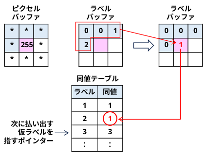
(2パス目)
・同値テーブルの内容に従って、ラベルバッファのラベルを振り直す。
OpenCV で Suzuki-Abe アルゴリズムをベースにしたラベリングの動作を確認できる。
(data/task_connected_componet_labeling/src/test_labeling.py)
import cv2, sys
import numpy as np
# 二値化の閾値
TH = 64
argv = sys.argv
argc = len(argv)
print('%s executes connected component lableing' % argv[0])
print('[usage] python %s ' % argv[0])
if argc < 2:
quit()
# 画像をグレースケールで読み込み、二値化する
gray = cv2.imread(argv[1], cv2.IMREAD_GRAYSCALE)
binImg = np.zeros(gray.shape, gray.dtype)
binImg[gray > TH] = 255
binImg[gray <= TH] = 0
nlabels, labels, stats, centroid = cv2.connectedComponentsWithStats(binImg)
・ nlabels： ラベル数。背景のラベル(0)も含むため、連結成分数＋1 になる。
・ labels： ラベルバッファ
・ stats： 外接矩形の left, top, width, height, 面積(ピクセル数)
・ centroid: 重心座標
ラベル番号が同じピクセルに同じ色をつけると、こんな感じになる。
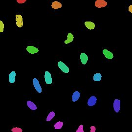
連結成分のサイズも分かるので、サイズでフィルターを掛けることもできる。
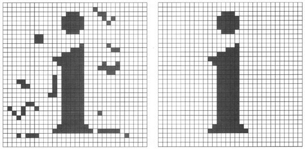